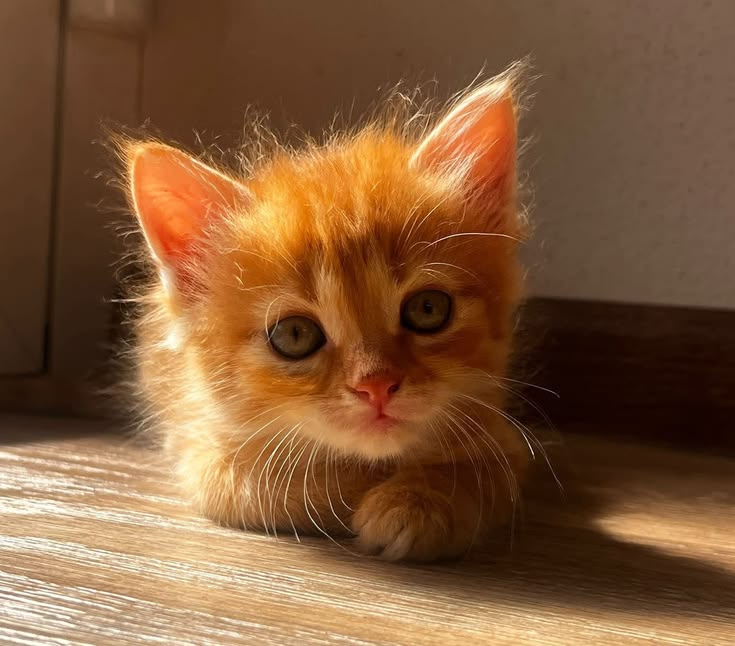
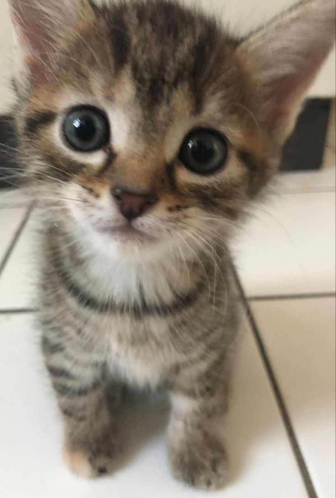
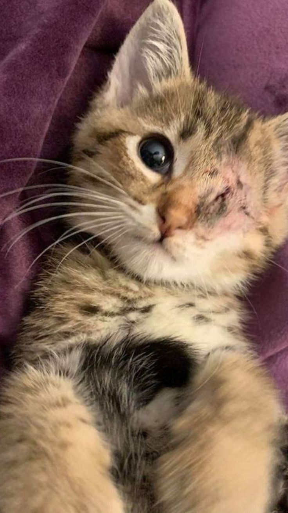
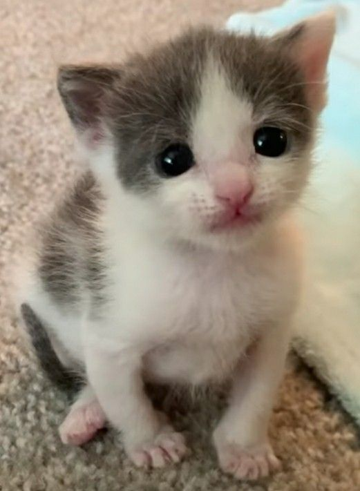
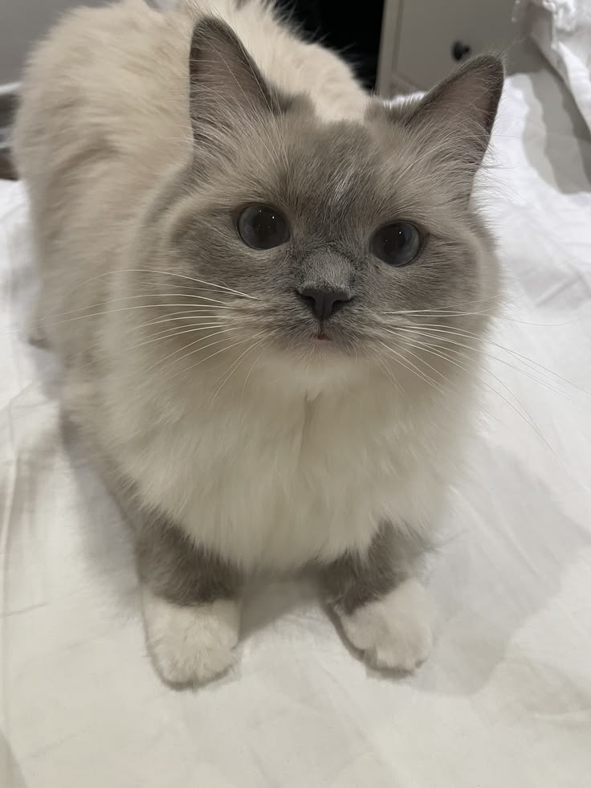
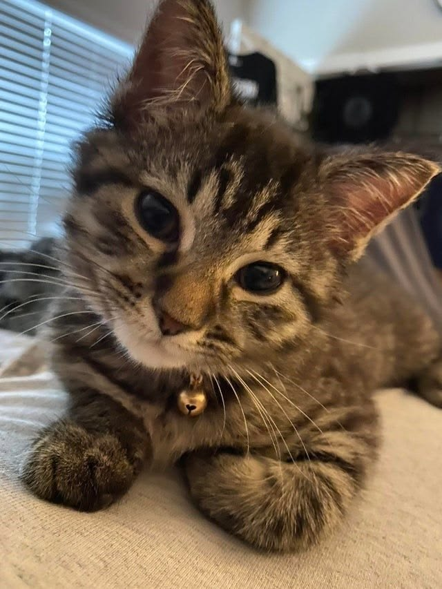
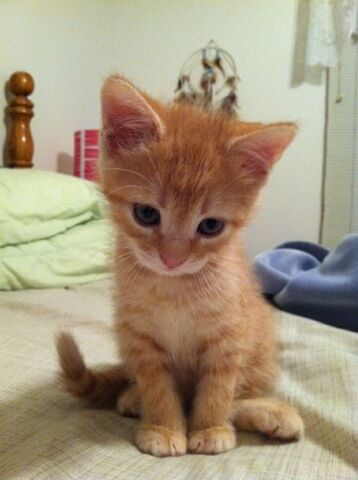
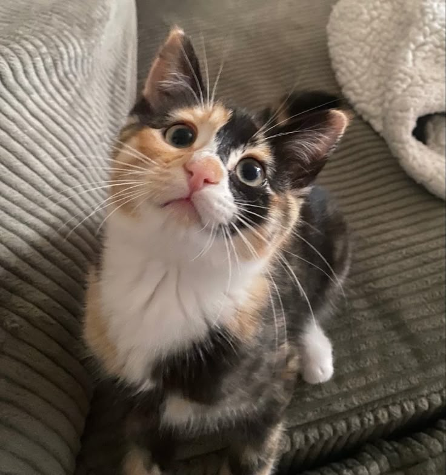
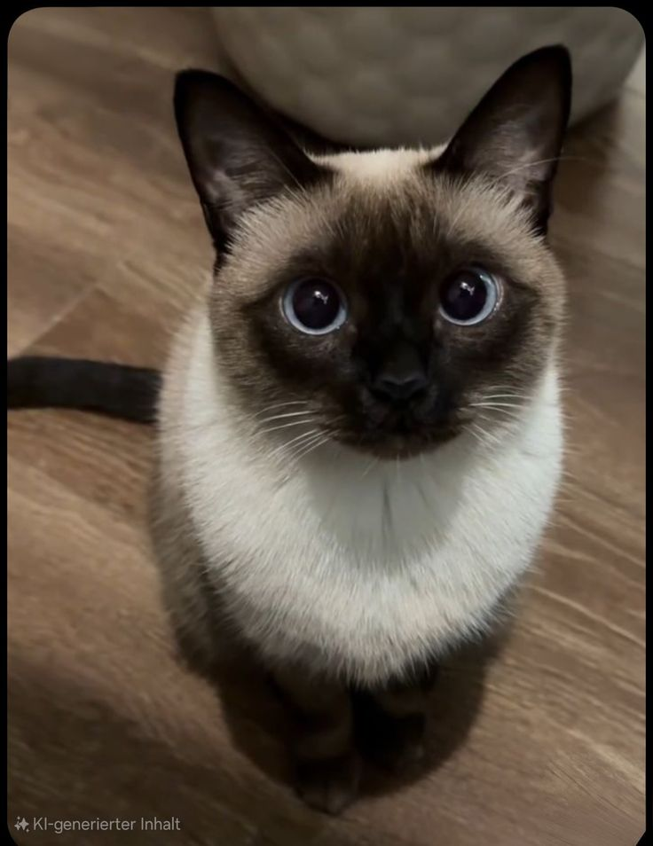
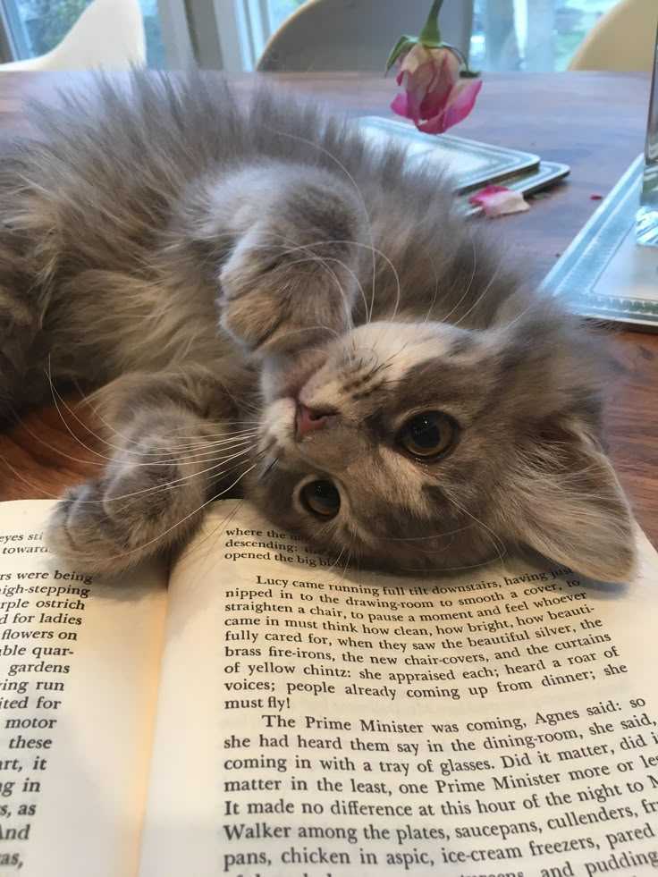

Tuxedo / Travieso
Un solcito juguetón al que le encanta perseguir hilos y dormir sobre sudaderas calentitas.
Estoy interesado 🐾
Atigrado tierno
Muy curioso y observador. Le fascinan las ventanas y escuchar música suave mientras descansa.
Estoy interesado 🐾
Especial / Valiente
Una dulzura de gatita muy cariñosa que regala los mejores ronroneos del mundo a cambio de mimos.
Estoy interesado 🐾
Blanco y gris
Tímido al principio, pero en cuanto te conoce se convierte en la sombrita más fiel de la casa.
Estoy interesado 🐾
Ragdoll / Elegante
Amante indiscutible de los libros de poesía. Le encanta acurrucarse en tus piernas mientras lees.
Estoy interesado 🐾
Tabby juguetón
Tiene una mirada tierna que te derrite el corazón. Muy activo, alegre y sociable con visitas.
Estoy interesado 🐾
Pequeño aventurero
Extrovertido, intrépido y con un apetito voraz por las croquetas y las siestas largas en el sofá.
Estoy interesado 🐾
Calico / Dulce
Una obra de arte andante. Tranquila, elegante y sumamente limpia. Disfruta de la paz del hogar.
Estoy interesado 🐾
Siamés / Ojos azules
Habladora y sumamente tierna. Te contará todo sobre su día apenas llegues de la calle.
Estoy interesado 🐾
Gris tierno
El rey de las siestas literarias. Se quedará dormido plácidamente entre las páginas de tus novelas.
Estoy interesado 🐾